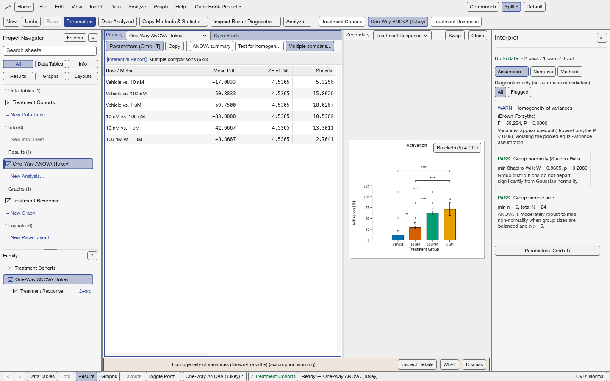
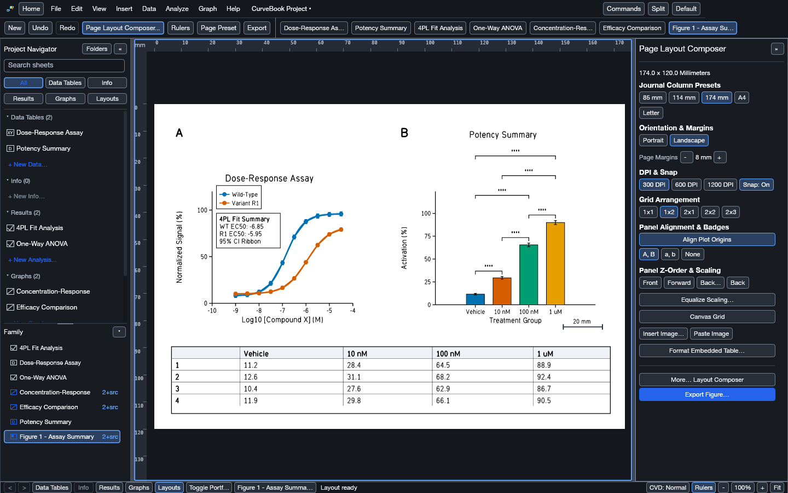

Desktop GUI Getting Started (Beta)
The CurveBook desktop GUI (curvebook) runs a declarative egui 0.37 / wgpu + AccessKit workspace pairing a curated 8-menu bar (File, Edit, View, Insert, Data, Analyze, Graph, Help), OKLab/OKLCH perceptual themes (Light, Dark, HighContrast), ActionRank-prioritized contextual toolbars (⋯ overflow on compact windows), draggable splitters, live split data-and-graph comparison, and multi-panel figure layout composition.
Note
Beta documentation boundary (R12.7): This page is the Beta desktop quick-start covering the primary interactive workspace and dialogs. The comprehensive menu-by-menu Using the App user guide (R12.7) and step-by-step workflow tutorials (R12.2) follow after Beta alongside recorded cross-OS manual walkthroughs (R10.13, R10.24).
See Get Started & Installation for platform packages and checksum verification.
1. Launching & Starting a Project (Welcome & New Data Table)
When launching curvebook without an existing .curvebook argument (or starting a new workspace), CurveBook presents the 3-pane Welcome & New Data Table Workspace Hub (WelcomeWizardState) with four starting modes:
- Empty Data Table: Choose any of CurveBook's structured table archetypes (
XY,Column,Grouped,Contingency,Survival,Parts of Whole,Multiple Variables,Nested), configure X-column format (Numbers,Dates,Sequence,None), and choose raw replicate subcolumns or pre-summarized entry (Mean + SD + N,Mean + SEM + N, error limits, quartiles). - Tutorial Sample Data: Instantiate built-in clean-room scientific sample datasets to inspect populated tables, analyses, and graphs immediately.
.cbtemplateTemplates: Open a saved reusable template carrying preconfigured analyses, parameter rules, graphs, and layouts ready for new observations.- Clone Pipeline: Duplicate an existing sheet family structure (
sheet.clonePipeline) onto new raw data.
The two-tier top chrome features the curated 8-menu bar (File, Edit, View, Insert, Data, Analyze, Graph, Help — using native macOS menus or --in-window-menus), a Sheet-Adaptive Contextual Action Strip ordered by ActionRank (Primary, Secondary, Overflow), the Cmd/Ctrl+K Command Palette, and Workspace Presets (Default, Data Prep, Modeling, Publication, Compact). Optional launch flags (curvebook --help) include --portable-dir <dir>, --rulers, --in-window-menus, --ttf-font <path>, and --new-instance.
2. Entering Data, Exclusions & Quick Statistics
- Edit data cells directly in the Data grid (toggle row titles on
Columntables via View › Row Titles), paste delimited clipboard text (Cmd/Ctrl+V), or open/import.curvebook,.csv,.tsv,.pzfx,.prism, or.xlsxfiles via File › Open…, File › Import, or file drag-and-drop. Importing.prism,.pzfx, or.xlsxinto an open project with existing sheets or unsaved changes opens a replace-or-merge confirmation modal (Add to current project vs. Open as new project), and any non-fatal import warnings are shown in the Import Warnings panel (reopenable from the status bar or File › Import › Import Warnings…). - Selecting any numeric cell range updates the footer Quick Statistics readout live (
n,excl,mean,SD,SEM,median,sum; see Calculators & Quality-of-Life Capabilities). - Toggle non-destructive observation exclusions (
Cmd/Ctrl+E) or attach audit provenance tags (Edit › Exclude Selection with Auditable Reason...,Shift+Cmd/Ctrl+E;QOL-3) without deleting underlying values. - Create derived columns using
=Calculated Variables directly inMultipleVariablestables (Manage Variables…renames, merges, orders, or pins categorical reference levels).
3. Running an Analysis, Creating Graphs & Live Split Comparison
Run a statistical test, curve fit, or table transform from Analyze › Analyze... (Cmd/Ctrl+Shift+A), the toolbar Analyze CTA, or the Command Palette (Cmd/Ctrl+K):
- CurveBook attaches a linked
ResultSheetunder Analyses (with multi-tab tables,QOL-7diagnostics-only assumption banner, andQOL-6Copy Methods & Statistical Reporting) and updates dependent Graphs automatically through the reactive DAG. - Use Transform / Normalize with Create a new graph of the results checked to generate a graph (such as a normalized vertical-label heatmap) alongside derived data, or use Insert › New Graph… (
Create Graph) to create single-series graphs across every dataset at once with a shared Y-axis title. - In the Portfolio Gallery, use
Shift+ClickorCmd/Ctrl+Clickto select multiple graphs and invoke Apply Style From… (Graph › Apply Style From…) to clone selected formatting facets across targets in one undo step. - Copy a rectangular cell range in any
ResultSheetand choose Right-click › Paste Table on aGraphSheetto place a liveEmbeddedResultTable, then customize transposing, headers, typography, and borders in Format Embedded Table… (Graph › Layout › Format Embedded Table…). - Open Format Graph… or Format Axes… (or the Trailing Inspector dock,
Cmd/Ctrl+Shift+I) to configure opacity presets, independent Show data points and Show fitted curve checkboxes, Left Y / Right Y2 assignment, horizontal offsets,Column/Groupedhorizontal orientation, Kaplan–Meier metric/staircase/error modes, pooled Forest diamond visibility, heatmap label orientations,TickDirection,AbsoluteDecimallabels, and transparent/solid page fills. - Toggle View › Toggle Split Data + Graph Workspace (
Cmd/Ctrl+\,QOL-4) with a draggable splitter to display aGraphalongside yourDataorResultsheet: edits, cell exclusions, and model parameter tweaks immediately redraw the fitted curve and bands, with two-way cell/point brushing (QOL-5) and vertex hover readouts on longitudinal spaghetti plots.


4. Composing Multi-Panel Page Layouts & Embedded Images
Switch to the Layouts section in the Project Navigator (or Graph › Layout…) to arrange multiple GraphSheets, live tables, and images onto a physical page canvas (LayoutSpec, MAX_LAYOUT_ITEMS = 64):
- Scaling, Alignment & Z-Order: Apply journal column-width presets (
SingleColumn88mm,ColumnAndHalf130mm,DoubleColumn180mm), align axis origins (Graph › Layout › Align Plot Origins), open Equalize Scaling… (Match Smallest,Match Largest, orExplicit %) to normalize inner plot scaling factors across panels, and reorder panel Z-stacking (Bring to Front, Bring Forward, Send Backward, Send to Back) with transparentpaper_fill: Noneforeground overlays/insets. - Embedded Images & Canvas Grid: Insert PNG, JPEG, or TIFF images via Insert › Image… (
rfdfile picker) or paste withCmd/Ctrl+V, resize from corner handles (Shiftunlocks aspect ratio), rotate (Shiftsnaps in 15° steps), edit 4-edge crop and borders in Format Image…, and toggle non-exported guides via View › Canvas Grid. - OKLab/OKLCH Themes & CVD Preview: Switch
Light,Dark, andHighContrastOKLab/OKLCH themes in Settings & Languages, and toggle live CVD / grayscale canvas preview (QOL-9). Broken upstream references display explicit dashed broken-link glyphs.

5. Saving Projects, Templates & Publication Exports
- Save Project (
.curvebookor.curvebook.d/): File › Save and File › Save As… write atomic deterministic.curvebookZIP archives (with forward-version overwrite refusal), alongside CRC-verified crash-recovery WAL journals between saves (Files, Storage & Interchange). Create persistent milestone snapshots via File › Checkpoints › Create Checkpoint…. - Import & Warnings (
File › Import): Import.csv/.tsv,.pzfx,.prism, and.xlsxfiles via File › Import or drag-and-drop. When importing.prism,.pzfx, or.xlsxinto a project with existing sheets or unsaved changes, the replace-or-merge confirmation modal offers Add to current project alongside Open as new project. Non-fatal warnings open the Import Warnings panel, which can be reopened from the status bar or File › Import › Import Warnings…. - Export Figures (
File › Export): Use File › Export (figure export) or File › Print… to generate publication SVG 1.1,%PDF-1.7(sRGB / CMYK / Grayscale, optional glyph outlining), high-DPI PNG / TIFF (LZW/Deflate/ uncompressed), Windows.emf, or multi-flavor OS clipboard vector/raster copies. - Export Data, Results & Reports (
File › Export):- CSV Table…, CSV Results…, and Export All Data Tables… open the CSV export options dialog to select delimiter, decimal separator (defaulting to the active locale preset), and (for results) all tabs in tidy format or a single tab; saving with a
.tsvextension automatically selects the tab (\t) delimiter. Export All Data Tables… prompts for an output folder and writes one delimited file perDataSheet, named from the sanitized table title. - JSON Results… writes structured analysis output (
analysis.exportJson). - Save Methods Report… writes the active result's methods summary (
result.generateReport) to.md,.txt, or.texbased on the chosen extension (while Analyze › Copy Methods & Statistical Reporting remains available for clipboard export).
- CSV Table…, CSV Results…, and Export All Data Tables… open the CSV export options dialog to select delimiter, decimal separator (defaulting to the active locale preset), and (for results) all tabs in tidy format or a single tab; saving with a